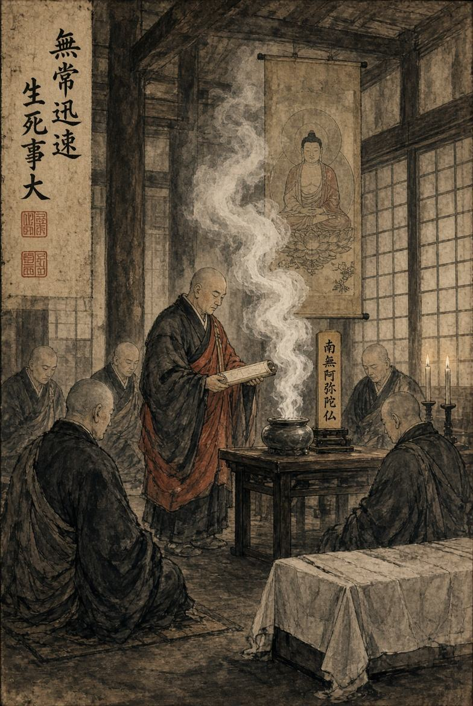
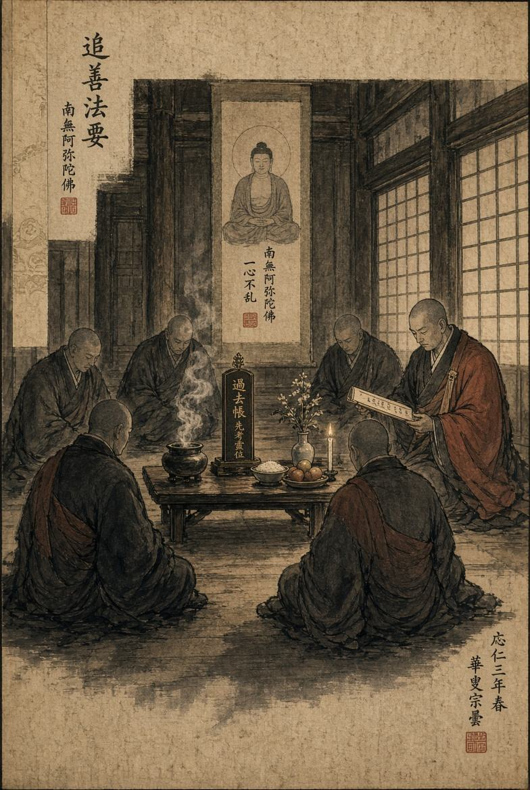
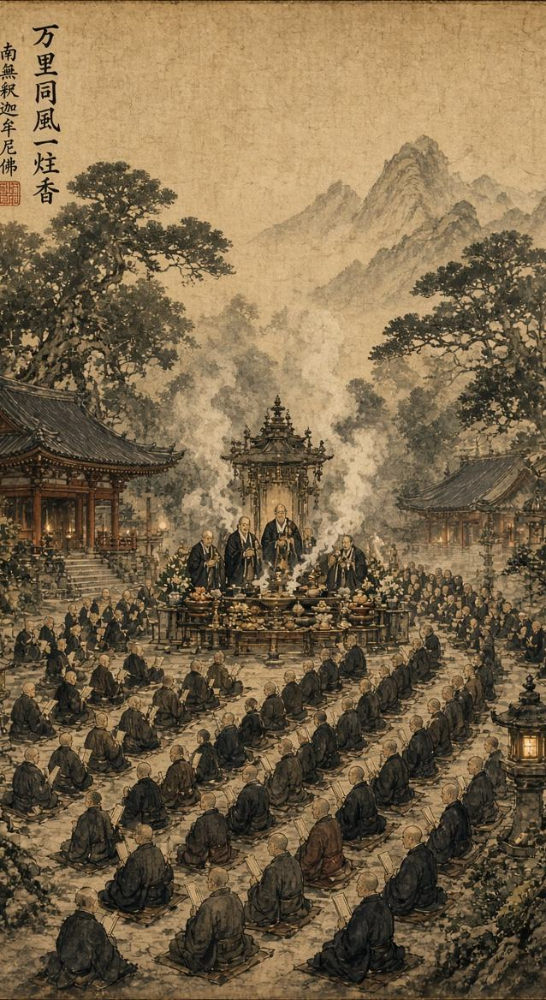

Ритуальные обряды
Храм является местом, где человек может проводить самые важные события своей жизни. Рождение, смерть, память об ушедших, благодарность, просьба о благословении или желание провести особый обряд - всё это может стать частью жизни Сангхи.
Храм является местом, где человек может проводить самые важные события своей жизни. Рождение, смерть, память об ушедших, благодарность, просьба о благословении или желание провести особый обряд - всё это может стать частью жизни Сангхи.
Поэтому храм принимает просьбы о проведении различных ритуальных обрядов. Обратиться за помощью может любой человек, независимо от его происхождения, положения или принадлежности к определённому клану.

Обряд проводов ушедшего
Одним из наиболее важных обрядов является погребальная церемония.
Если человек потерял родственника, друга, товарища или члена своего клана, он может обратиться в храм с просьбой провести обряд в память об умершем. Монахи выслушивают просьбу, узнают имя умершего и обстоятельства его смерти, после чего назначают время проведения церемонии. В назначенный день храм готовится к обряду. Монахи собираются вместе, зажигаются благовония, а перед присутствующими устанавливается место для проведения церемонии. Во время обряда читаются сутры, произносятся наставления о непостоянстве жизни и возносится молитва о спокойствии ушедшего. Близким умершего предоставляется возможность проститься с ним и выразить свою скорбь. После завершения церемонии монахи могут провести погребение или сопроводить родственников к месту захоронения.

Поминовение
Не каждый обряд связан непосредственно с недавней смертью.
Родственники или товарищи могут обратиться в храм для проведения поминальной службы по человеку, который погиб некоторое время назад. В таком случае монахи проводят отдельную службу памяти, во время которой вспоминают умершего и читают сутры. Такой обряд может проводиться как для одного человека, так и для нескольких погибших. Например, после крупного сражения целый отряд может обратиться к храму с просьбой провести общую службу по павшим товарищам.
Обряды по просьбе
Храм также может проводить другие церемонии по просьбе людей.
Человек может обратиться к монахам с просьбой провести молитву, благословение, обряд благодарности или другую церемонию, соответствующую традициям храма. Каждая подобная просьба рассматривается отдельно. Бонза определяет, какой обряд подходит для конкретной ситуации и кто из монахов будет его проводить.

Глобальная церемония
Помимо обычных обрядов, храм может проводить масштабные церемонии, объединяющие большое количество людей.
Глобальная церемония проводится по особому решению Бонзы или по заранее согласованной просьбе нескольких организаций. Она может быть посвящена памяти погибших в крупном сражении, окончанию войны, трагическому событию, заключению мира или другому событию, которое затронуло большое количество людей. Для проведения такой церемонии храм заранее объявляет дату и время. Монахи подготавливают территорию, главный зал и место проведения обряда. При необходимости назначаются отдельные монахи, отвечающие за подготовку, порядок и проведение различных частей церемонии. В день мероприятия двери храма открываются для всех приглашённых. На территории могут собраться представители различных кланов, воинов, торговцев, крестьян и обычных жителей. Особое значение такая церемония приобретает после крупных сражений. На ней могут быть названы имена погибших, прочитаны сутры и проведена общая молитва в память обо всех, кто погиб независимо от того, на чьей стороне они сражались. На время проведения церемонии храм становится местом тишины и памяти. Враждующие стороны могут находиться рядом друг с другом, оставив оружие за пределами места проведения обряда. Глобальная церемония не обязательно должна быть связана со смертью. Она также может стать событием, посвящённым заключению мира между двумя организациями, важному празднику храма или другому значимому событию, которое заслуживает участия всей общины.
Мир приходит изнутри. Не ищи его снаружи.Будда Шьякмуни